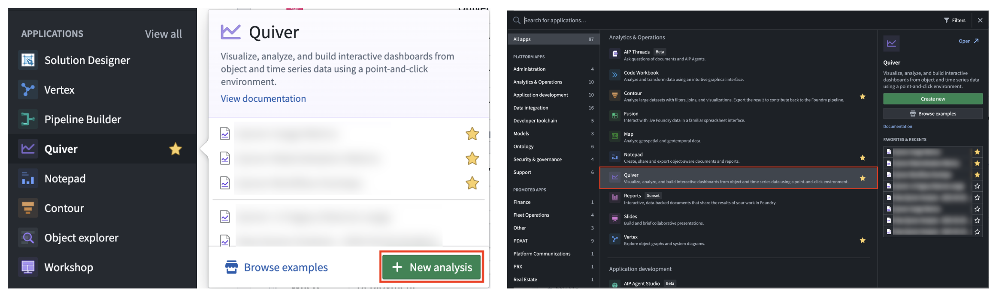
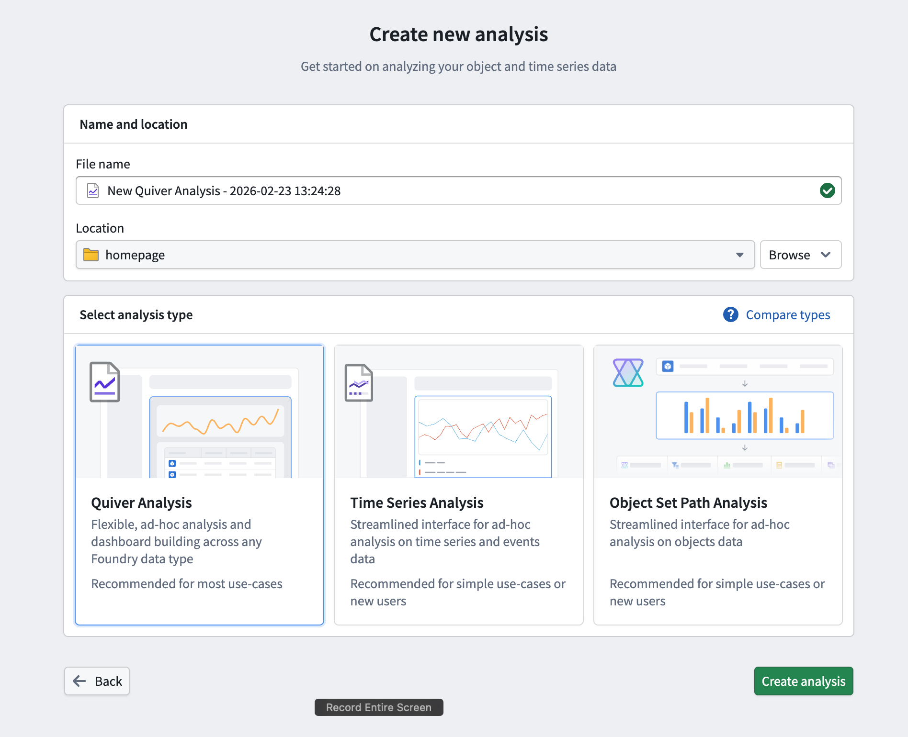
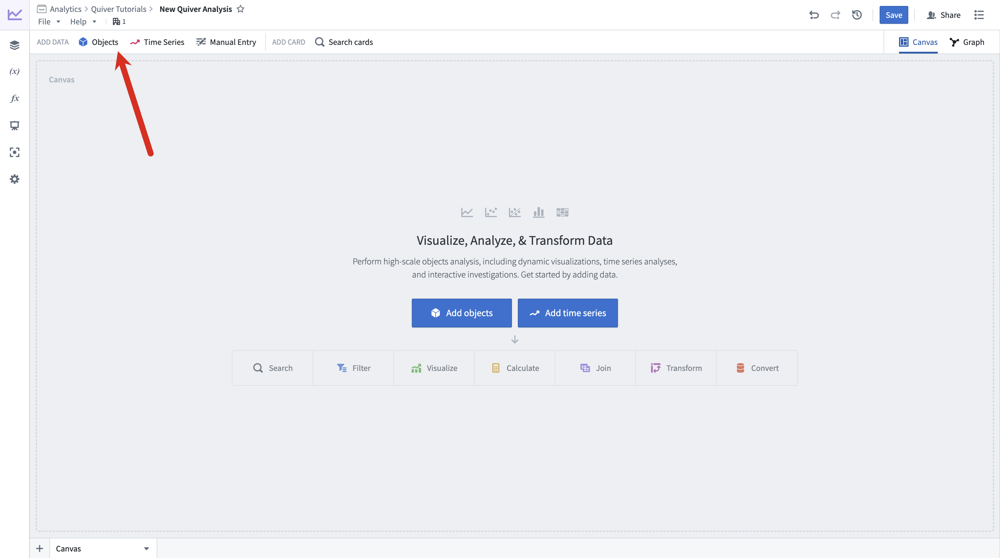
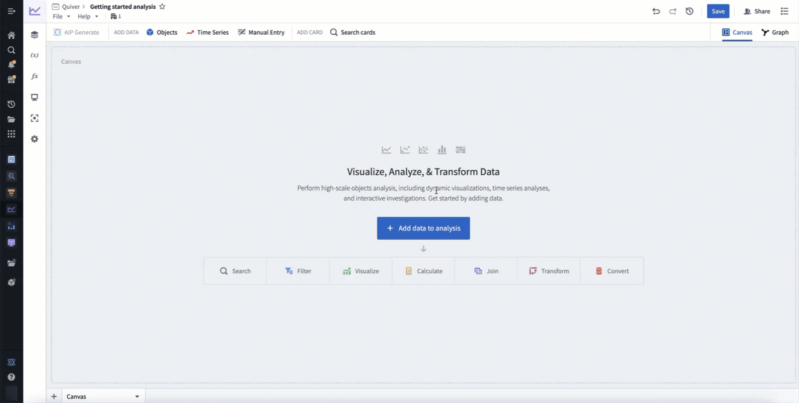
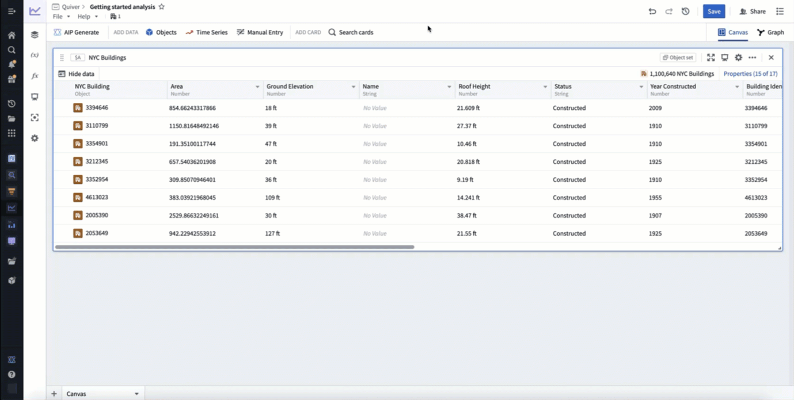
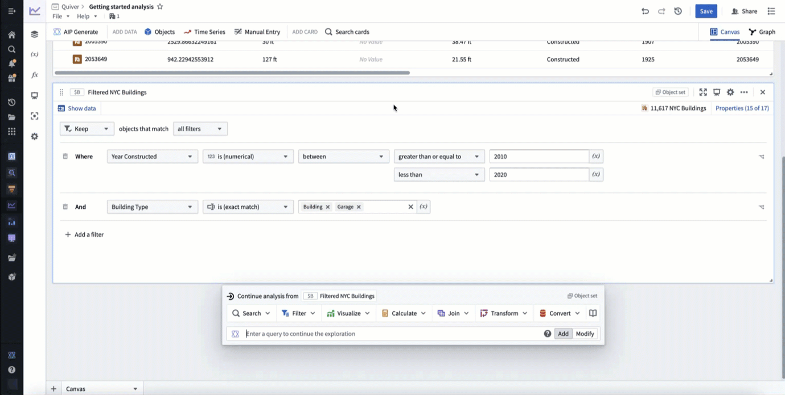
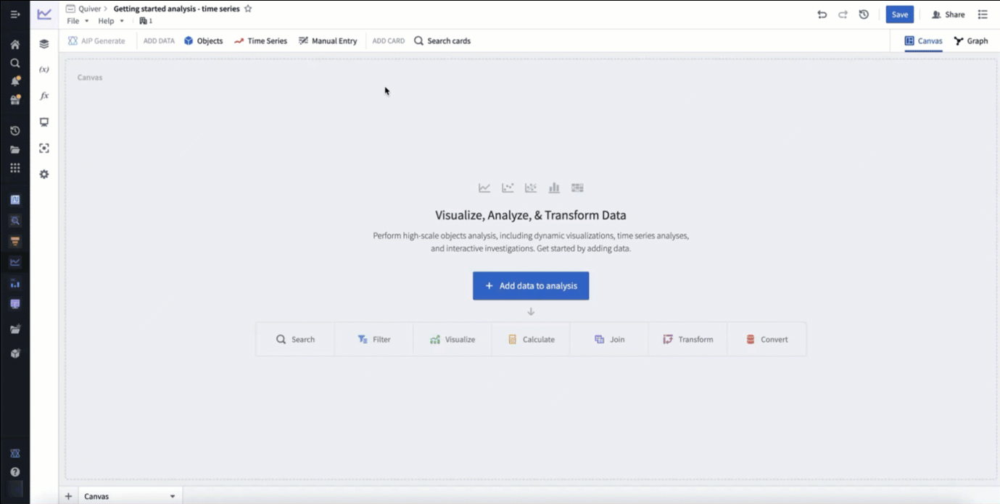
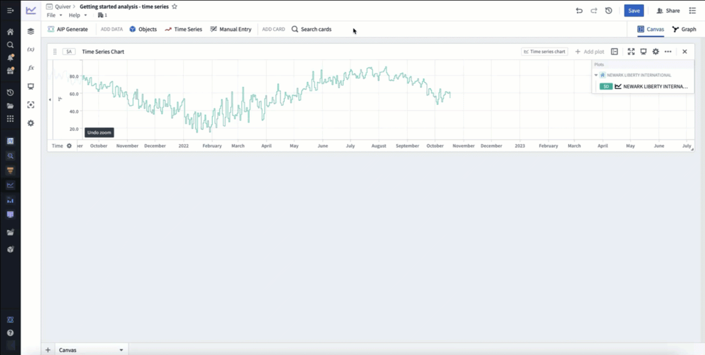
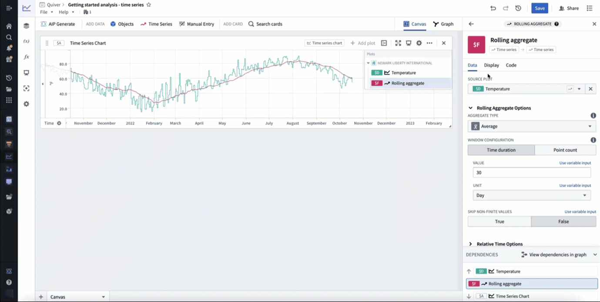

The following tutorial explains how you can use Quiver to analyze objects and time series data from the Ontology.
To create a new Quiver analysis, expand the Foundry sidebar to the left, then select View all in the Applications section. You will find Quiver under the Analytics & Operations section.

From there, start a new analysis by selecting +New Analysis, then choose a folder for the new analysis and select Save. You can also open an existing analysis or create a different analysis type.

:::callout{theme="success" title="Palantir Learning portal"} Jump into data analysis in Quiver immediately by taking the relevant course on learn.palantir.com â. :::
Once you have created a new analysis, you can start adding some objects data. Add initial data by selecting +Add data to analysis in the center of the screen. You can add additional data at any time from the Add data section of the analysis top bar.

Selecting +Add data to analysis will open Quiver's search bar to explore the Ontology for object types. Select an object type to add it to your analysis. After adding your object type, select X in the top right corner to close the search bar. You should now have an object set card in your analysis, which shows a table preview of the objects inside of the set and a count of all objects in the top right.
In the example below, we search for objects related to "nyc" and add the NYC Buildings object type.

Next, filter the objects using object properties with a filter object set card. Hover over the object set card added in the previous step to display the next actions menu below the card. Then, select Filter > Filter object set to add the new card.
In the example below, we filter to only include buildings constructed between 2010 and 2020 that are of type building or garage.

Next, visualize your filtered objects by creating a bar chart. Hover over your filter object set card to display the next actions menu below the card. Then, select Visualize > Bar chart to create a bar chart. Configure the bar chart using the editor panel on the right. Specify a Group by configuration to define the bar chart categories, then configure additional settings such as the data series metric or segmentation. You can also edit various display options from the Display tab.
In the example below, we create a bar chart showing the average roof height grouped by Building Type. We then segment this by the Year Constructed. Lastly, we format the chart, changing the orientation to Vertical and the segmentation display to Grouped. In our new chart, we can see that from the years 2010 to 2020 the average roof height for buildings in New York steadily increased, while the average roof height for garages slowly trended down.

You now have a complete analysis with filtered objects and a customized chart.
In Foundry, time series are stored as time series properties in the Ontology. You can add time series properties to your Quiver analysis by selecting Time Series in the Add data section of the analysis top bar. This will open a time series search bar, allowing you to browse objects with time series and add their time series properties to your analysis.
In the example below, we search the Weather stations object type for "newark", then add the Temperature time series property for Newark Liberty International airport. After closing the search bar, this data was added in a time series chart with the temperature plot. Finally, we click and drag on the time series chart to make a time range selection, then select Zoom to selection to navigate to the most recent time range of data.

You can derive a new time series from your original time series by applying a time series transformation. First, hover over your time series chart to display the next actions menu below. Select Add plot to browse the list of possible transformations. Choose a transform to add a new time series plot to your chart. You can then configure this plot using the editor panel on the right.
In the example below, we transform our input temperature time series by using the Rolling aggregate plot to derive a 30 day rolling average.

Now, you can visually distinguish your derived plot from your original plot by adding formatting configurations from the Display tab in the editor panel. Time series plots have various display options such as color, line width, gradient shading, and point style. After adding display configuration, you can move the derived plot to its own chart. Move plots between charts by dragging their legend items or by using the Move plot section in the next actions menu.
In the example below, we make the rolling average's plot line thicker, show a gradient, and change the color to purple. We then move it to its own chart by dragging its legend item out onto the analysis canvas.

You now have a complete time series analysis with transformed and formatted time series. Next, look for anomalies in your time series using the time series search card, or create a dashboard to share your analysis.